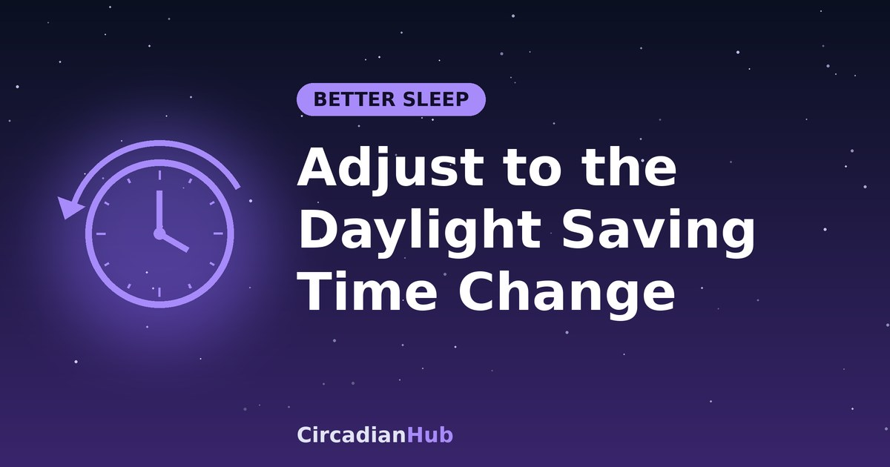

How to Adjust to the Daylight Saving Time Change: A Day-by-Day Plan for Falling Back

Every autumn the clocks go back and we are told we gain an hour of sleep. On paper that is true. In practice, many people wake an hour too early, feel tired at what is suddenly the wrong time of day, and spend a week out of step with the clock on the wall. The good news is that the autumn change is the easier of the two, and a small amount of planning can make it almost unnoticeable. This guide explains what happens, what the evidence says, and gives a simple four-day plan that uses 15 minutes a day.
When do the clocks go back?
The dates depend on where you live. In most of Europe, including the UK, the clocks go back on the last Sunday of October. In the United States and Canada, they go back on the first Sunday of November.
| Region | 2026 | 2027 |
|---|---|---|
| European Union | Sunday 25 October | Sunday 31 October |
| United Kingdom | Sunday 25 October | Sunday 31 October |
| United States and Canada | Sunday 1 November | Sunday 7 November |
Clocks fall back overnight: in the UK, 02:00 becomes 01:00, and in most of the US, 2:00 a.m. becomes 1:00 a.m. Some places do not change their clocks at all, for example Hawaii and most of Arizona, and rules can change, so check an official source for your location.
What actually happens to your body
Your body clock, or circadian rhythm, is not set by the wall clock. It is set mostly by light, and it runs on its own rhythm of roughly 24 hours. When the clocks go back, your body does not know. You keep feeling sleepy and alert at the same body times as before, but the numbers on the clock have moved an hour.
The result is predictable:
- Early waking. If you wake at your usual body time, the clock reads an hour earlier than you are used to.
- Early evening sleepiness. You may feel ready for bed at what the clock calls 22:00, when your body thinks it is 23:00.
- Hungry at the wrong time. Meals that follow the clock now arrive an hour later in body time, so lunch and dinner can feel late.
- Different light. Mornings are brighter, and evenings turn dark about an hour earlier.
This is a shift of one hour, the same as flying one time zone west. Our westbound jet lag guide explains why moving later is the easier direction. Most people's internal clock runs a little longer than 24 hours, so it drifts later more easily than it moves earlier. That is why the autumn change is usually gentler than the spring one, when you lose an hour.
What does the evidence say?
Research on the autumn change is less extensive than on the spring change, and the findings are mixed. Several studies suggest that the extra hour causes only small, short-lived changes to sleep, and that most people adjust within a few days. Some research has found that people sleep slightly less well or wake earlier for a few days afterwards, and one large Danish registry study reported a rise in depression diagnoses in the weeks after the clocks went back, possibly linked to shorter daylight in the evening. Findings like these show an association, not proof of cause, and the effect on any one person is hard to predict.
What is reasonably clear is that the change works on top of whatever else is going on. If you are already short of sleep, have small children, work shifts or are prone to low mood in winter, it is more likely to be noticeable. That is where a little preparation helps.
Option 1: The simple approach
If you are flexible and tend to adjust easily, you do not need to do anything special. The plan is:
- On the night of the change, go to bed at your normal time. The night is an hour longer, so you get an extra hour of sleep if you wake at your usual clock time.
- Get up at your usual clock time the next morning. If your body wakes you earlier, get up rather than dozing for another hour, since sleeping in pushes the whole week later.
- Get outdoors in daylight soon after waking.
- Keep meals, exercise and bedtime at their usual clock times from the first day.
Expect to feel a bit sleepy in the evening for two to four days. That is the body clock catching up.
Option 2: A gradual four-day plan
If you are sensitive to changes, have a demanding week ahead, or are looking after children, you can shift your sleep in advance. Move your bedtime and wake time 15 minutes later each day for four days. By the morning after the change, you have moved a full hour and your body is already on the new time.
This example assumes a normal bedtime of 23:00 and wake time of 07:00. Shift the numbers to match your own.
| Night | Bedtime | Wake time next morning |
|---|---|---|
| Wednesday night | 23:15 | 07:15 |
| Thursday night | 23:30 | 07:30 |
| Friday night | 23:45 | 07:45 |
| Saturday night (clocks go back) | 00:00 on the old clock (23:00 on the new clock) | 07:00 on the new clock |
| Sunday night onwards | 23:00 | 07:00 |
If the change is on 25 October in your country, start on Wednesday 21 October. If it is 1 November, start on Wednesday 28 October.
The CircadianHub calculator can help you pick your new bedtimes on whole 90-minute cycles. The plan keeps your sleep the same length every night, so it never asks you to lose sleep.
Use light to help the clock move
Light is the strongest signal to your body clock, and timing matters more than amount.
- Morning: get bright daylight within the first hour after waking, ideally outdoors, even if it is cloudy. After the change, mornings are brighter than before, which helps you. Our article on morning sunlight and your circadian rhythm explains how it works.
- Evening: do not try to fight the early darkness with bright lights late at night. Dim the lights in the last hour or two before bed, and reduce screen brightness. See our guide to blue light and melatonin.
- Lunchtime: with the sun setting earlier, a short walk at midday is one of the easiest ways to get daylight on a working day.
Caffeine, food, exercise and naps
- Caffeine: stop at least six hours before bed, and avoid using extra coffee to get through the first evening. Our coffee nap article covers caffeine timing in more detail.
- Meals: eat at your usual clock times. Regular meals are a signal to the body clock, and they help it settle faster.
- Exercise: morning or afternoon activity is a good anchor for the new time. Very late hard exercise may make it harder to fall asleep.
- Naps: if you need one, keep it to 20 minutes and finish before about 15:00. See best nap length. A long late nap can make the first few nights harder.
- Alcohol: a late drink may make you sleepy, but it disrupts sleep in the second half of the night. Read about alcohol and REM sleep.
Children and babies
Young children do not care what the clock says, and they are likely to wake an hour early after the change. Two approaches work well.
- Shift in small steps. Move bedtime and waking later by 10 to 15 minutes every day or two, starting a few days before. Meals and naps move by the same amount.
- Switch on the day. For some children it is easier to go to the new clock time all at once. If they wake early, keep the room dark and the morning calm, and let the day start at the new clock time.
Blackout curtains or a clock that signals when it is fine to get up can help. If your child is very unsettled or the change seems to last more than a couple of weeks, ask your child's doctor.
Shift workers and people on call
On the night the clocks go back, a 12-hour night shift lasts 13 hours in places where the change happens during the shift. That can make for a longer, more tiring night, so plan extra rest before it and an extra sleep opportunity afterwards. Employers may have their own rules about how they handle the extra hour, so check yours. For more on managing your sleep around shifts, see our night shift sleep schedule.
Winter mood and darker evenings
The change brings darker evenings at the same time as the days are getting shorter, and some people find their mood drops at this time of year. Daylight exposure, regular routines, activity and social contact all help. If low mood is persistent, affects daily life or returns every winter, speak to a doctor, since effective treatments exist. Darker evenings also mean more of the commute happens in the dark, so take extra care when driving, cycling or walking if you are tired.
Common problems and fixes
| Problem | What to try |
|---|---|
| I wake an hour early | Stay in bed in the dark for a short while if you can, but get up at your planned time and get daylight soon after |
| I am sleepy at 21:00 | Keep active and in bright light until the evening wind-down rather than napping on the sofa |
| I cannot fall asleep at my new bedtime | Dim lights earlier, keep a wind-down routine, and avoid screens in bed. See how to fall asleep faster |
| I am tired for more than a week | Check how much sleep you are really getting with the sleep needs guide and look at your routine |
| I slept in on Sunday and feel worse | Go back to your normal wake time on Monday and get morning light |
Frequently asked questions
Do I really gain an hour of sleep?
On the night itself, yes: the night is an hour longer, so you can sleep an hour more if you go to bed at your usual time. After that the extra hour is gone, because your routine follows the clock again. If you use it to sleep in on the following mornings, your body clock may drift later for a few days.
Is the autumn change easier than the spring one?
For most people, yes. Delaying sleep is generally easier than advancing it. If you want a plan for the spring change, our article on shifting your wake-up time earlier includes a section on it.
Do night owls and early birds react differently?
They can. Early risers may find the new early mornings suit them for a while, and night owls may find the evening sleepiness a nuisance. See our article on chronotypes to learn more about your own pattern.
Should I take melatonin?
It is not usually needed for a one-hour change, and timing and dose matter. If you are thinking about it, ask a doctor or pharmacist first, especially if you take other medication or are pregnant.
Do I need to change time-critical medication?
If you take medication at precise intervals, ask your pharmacist or doctor how to handle the change night, since the day has 25 hours.
Summary
- The clocks go back on 25 October 2026 in Europe and the UK, and on 1 November 2026 in the US and Canada.
- Your body clock follows light, not the wall clock, so expect a few days of early waking and evening sleepiness.
- Keep it simple by sticking to your normal clock-time routine, or shift sleep 15 minutes later a day for four days beforehand.
- Get daylight in the morning, dim the lights in the evening and keep meals and caffeine on schedule.
- Keep your usual clock wake time rather than sleeping in, since that delays adjustment.
- Persistent tiredness or low mood deserves a conversation with a doctor.
Sources and further reading
Last updated: 1 October 2026. Links are general background reading from public-health organisations. How we write and update our guides.
Medical disclaimer: This article is for general information only and is not medical advice. If you have persistent sleep problems, low mood or excessive daytime sleepiness, speak with a doctor or sleep specialist.